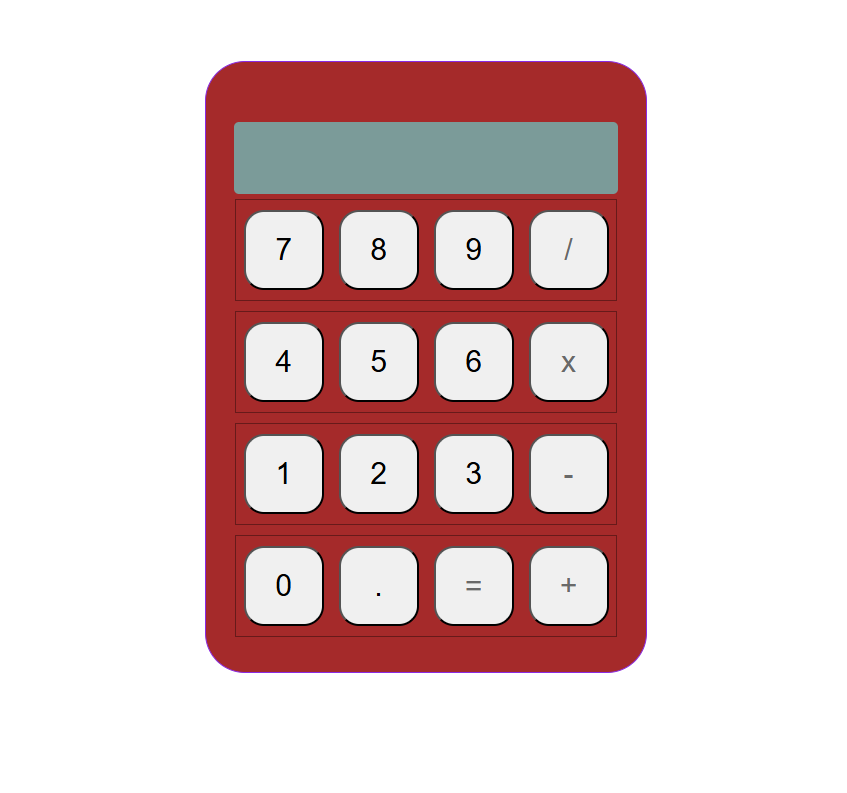
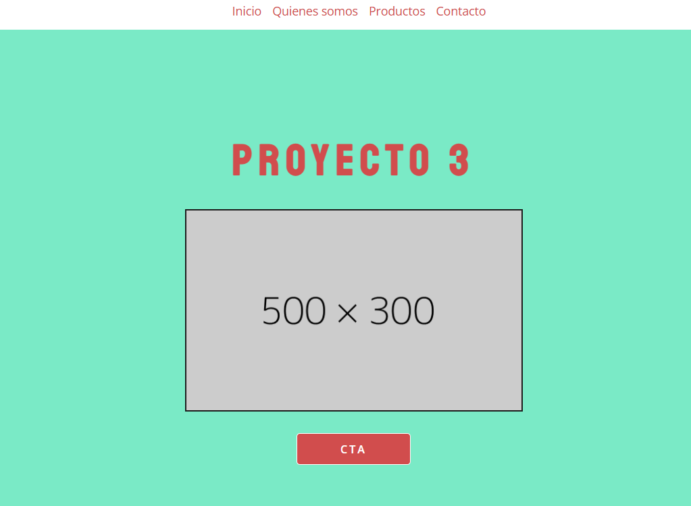
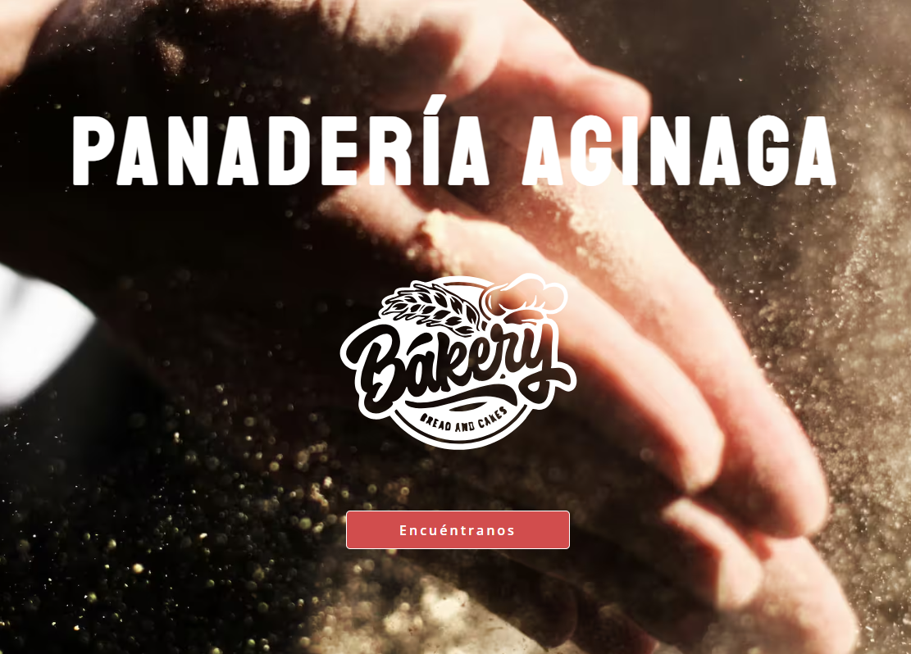
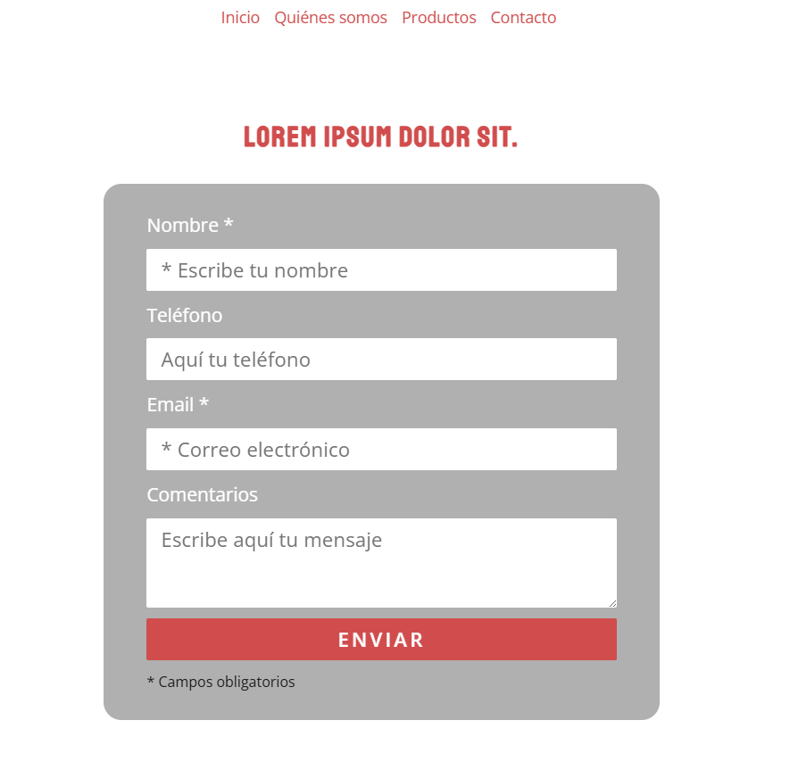
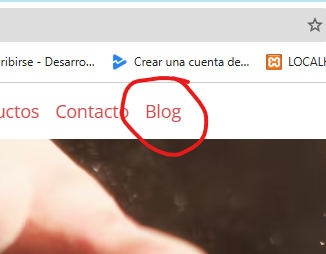

Proyectos relativos al curso de Desarrollo Web en Nativo
Hola mundo en HTML y CSS básico. Iniciación con algún recurso
Proyecto de clonar repositorio público del profe y hacerlo nuestro. Calculadora funcional con HTML, CSS y JS
Proyecto en HTML y SCSS con semántica y creación de recursos HTML/SCSS. Uso modular de los recursos SCSS a través de @use
Ejemplo práctico en HTML y SCSS de la web de una panadería local. SEO, arquitectura de contenido y aprovechamiento de recursos. HTML, SCSS.
Conversión del proyecto a PHP, con includes y funcionalidad del formulario. Añadimos metadatos en el head.
Stack en nativo vanilla con wordpress integrado para la función única de blog.